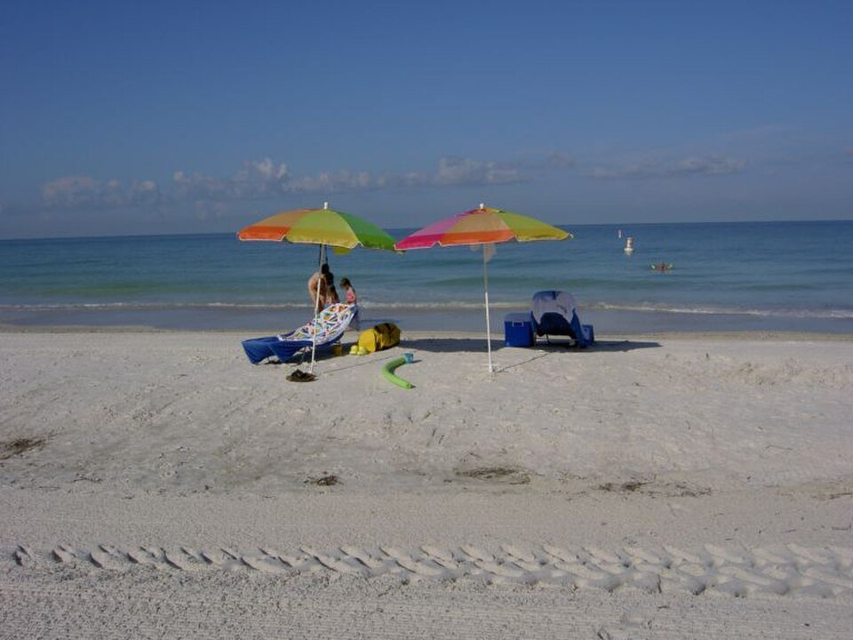

Bradenton Beach · Resort
Tortuga Inn and Tradewinds
Small beach resorts on the bay and Gulf.
Official details for Tortuga Inn and TradewindsOld Florida beaches, no high-rises.
Anna Maria Island is seven miles of white sand and low-slung beach cottages on the Gulf, with a free trolley running end to end and no building taller than three stories. Land at Sarasota-Bradenton, stay at the Tortuga Inn or Tradewinds, ride the trolley, walk to Bean Point at the island’s northern tip, and watch the sunset from the Sandbar or the Beach House.

Time illustration: direct distance at 150 KTAS plus 15 minutes for departure and arrival, matching the discovery page. Use ForeFlight for your actual flight plan.
KSRQ, Sarasota-Bradenton International, is a towered airport at 30 feet with a 9,500-foot main runway, about 30 minutes from the island.
Sarasota-Bradenton International Airport, Sarasota, FL
Other FBOs: Atlantic Aviation (941-358-9600) and Ascension FBO (941-355-2902). Birds on and near the airport. No live fuel price is shown.
Florida Gulf Coast flying: daily summer thunderstorms from June to September, morning fog in winter, sea breezes, and hurricanes from June to November. About 420 nm from Myrtle Beach.
Rates and availability need travel dates. Winter and spring book early.
Small beach resorts on the bay and Gulf.
Official details for Tortuga Inn and TradewindsBeachfront rooms and cottages on the Gulf.
Official details for Cedar Cove Resort & CottagesCottages and rentals.
Bradenton Gulf Islands for More places to stayReserve weekend dinners.
Dinner on the sand at sunset.
Official details for SandbarWaterfront dining in Bradenton Beach.
Official details for Beach HouseThe island’s fine-dining restaurant, right on the beach.
Official details for Beach BistroSeafood near the city pier.
Official details for The WaterfrontOld Florida dockside dining in Longboat Key.
Official details for Mar VistaCasual seafood and oysters.
Official details for Anna Maria Oyster BarA café and coastal store in Anna Maria.
Official details for Ginny & Jane E’sA longtime Longboat Key restaurant and market.
Official details for Harry’s Continental KitchenRestaurants on the islands.
Bradenton Gulf Islands for More restaurantsThe trolley is free and runs all day.
This prototype links to the local visitor site. It does not yet match events to your travel dates.
Warm, dry days.
Bradenton Gulf Islands for Best weatherGulf sunsets every evening.
Bradenton Gulf Islands for SunsetsWatch the forecast.
Bradenton Gulf Islands for Hurricane seasonCheck the local calendar when choosing a weekend, and confirm dates and tickets with the organizer.
A sample island weekend. No bookings or availability confirmed.
Land at KSRQ mid-morning.
Lunch in town.
A short walk, then back to the airport.
Land at KSRQ, subject to weather, density altitude and your actual flight plan.
The beach and the trolley.
Sunset dinner at the Sandbar.
Bean Point.
Bridge Street and the piers.
Dinner at the Beach House.
One more beach walk.
Compute takeoff performance and allow time at the FBO.
Summer storms build by afternoon; leave in the morning.
The main sight.
Explore.
Dinner in town.
These details make the difference between an appealing list and a usable getaway.
Lodging, then a car.
About 420 nm from Myrtle Beach: an easy morning.
Use the trolley instead of parking.
February to May and October to November.
Picks and links reviewed by WingAway Weekends. Hours, prices, menus and availability change often, so confirm directly with each place before booking. Spotted something out of date, or have a favorite we missed? Email us at hello@wingawayweekends.com.
WingAway Weekends helps you discover the destination. Use ForeFlight and current official aviation information for route, performance, weather, NOTAMs and preflight decisions. Flight planning and PIC responsibility stay with the pilot.